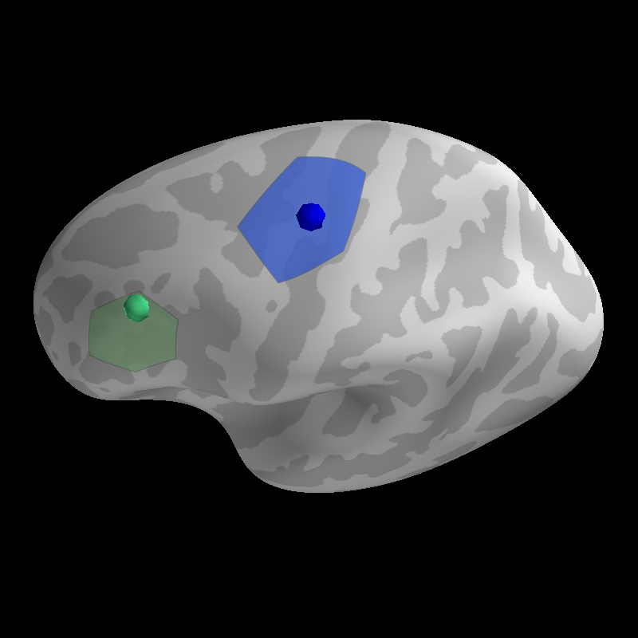

Note
Click here to download the full example code
Generate Surface Labels¶
Define a label that is centered on a specific vertex in the surface mesh. Plot that label and the focus that defines its center.
Out:
Updating smoothing matrix, be patient..
Smoothing matrix creation, step 1
Saving label : example_data/coord-lh.label
Updating smoothing matrix, be patient..
Smoothing matrix creation, step 1
Saving label : example_data/coord-lh.label
((180.0, 39.99999999999999, 0.42999999999999994, array([0., 0., 0.])), 90.00000000000001)
from surfer import Brain, utils
print(__doc__)
subject_id = "fsaverage"
"""
Bring up the visualization.
"""
brain = Brain(subject_id, "lh", "inflated", cortex=("gray", -2, 7, True),
units='m')
"""
First we'll identify a stereotaxic focus in the MNI coordinate system. This
might be a peak activations from a volume based analysis.
"""
coord = [-43, 25, 24]
"""
Next we grow a label along the surface around the neareset vertex to this
coordinate in the white surface mesh. The `n_steps` argument controls the size
of the resulting label.
"""
utils.coord_to_label(subject_id, coord, label='example_data/coord',
hemi='lh', n_steps=25, map_surface="white")
brain.add_label('example_data/coord-lh.label', color="darkseagreen", alpha=.8)
"""
Now we plot the focus on the inflated surface at the vertex identified in the
previous step.
"""
brain.add_foci([coord], map_surface="white", color="mediumseagreen")
"""
We can also do this using a vertex index, perhaps defined as the peak
activation in a surface analysis. This will be more accurate than using a
volume-based focus.
"""
coord = 0
utils.coord_to_label(subject_id, coord, label='example_data/coord',
hemi='lh', n_steps=40, map_surface="white",
coord_as_vert=True)
brain.add_label('example_data/coord-lh.label', color='royalblue', alpha=.8)
"""
Now we plot the foci on the inflated surface. We will map the foci onto the
surface by finding the vertex on the "white" mesh that is closest to the
coordinate of the point we want to display.
"""
brain.add_foci([coord], map_surface="white", coords_as_verts=True,
color="mediumblue")
"""
Set the camera position to show the extent of the labels.
"""
brain.show_view(dict(elevation=40, distance=0.430))
Total running time of the script: ( 0 minutes 1.346 seconds)